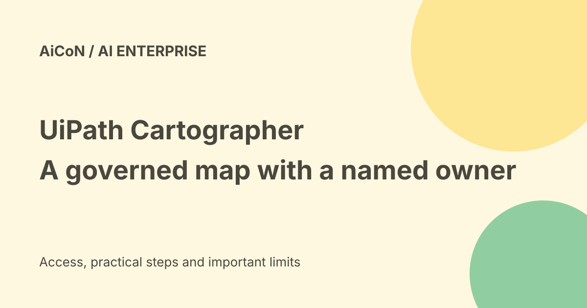

UiPath Cartographer: Map of Work, owners and approval limits
UiPath announced Cartographer on 23 September 2026 as a way to capture the rules, exceptions and decisions behind an enterprise process. Its Map of Work is described as customer-owned and governed by a named owner. Preparing that map does not by itself authorise a workflow to send, spend or change records.

What is a Map of Work?
A process diagram often shows the intended steps. UiPath describes its map as including the knowledge people use when the real process differs from the neat diagram.
That can include exceptions, rules, documents and judgement calls. The result should reflect how the organisation actually works rather than one person's incomplete account.
How does Cartographer capture it?
The launch describes a guided conversation for business analysts that combines documents, steps, rules and exceptions from different sources.
The company presents this as an alternative to repeated interviews and stale documents. Actual quality still depends on source material and the people reviewing the map.
A named owner approves changes
The announcement says the map has a named owner who approves every change. Feedback and judgement calls become proposed changes that the owner accepts or rejects.
It explicitly says nothing changes on its own. Keep that review boundary visible when designing the pilot and evaluating later revisions.
Design documents and build-ready specifications
UiPath says the map generates design documents and specifications that can support agents, workflows and automation on its platform.
A build-ready specification still needs testing and deployment controls. It can describe a wrong exception or omit a restriction if the source map is incomplete.
Three starting routes
The launch describes prebuilt maps for common processes, a Process Atlas of curated maps and a build-your-own route for proprietary or highly governed work.
Examples such as loan origination, claims and source-to-pay are templates, not proof that your exact organisation's rules are already captured.
The Decision Ledger
UiPath describes recording what was decided and why, then offering those decisions back as operating knowledge or proposed rules.
A one-off exception should not silently become a standing policy. Check who made the decision, its scope and whether it should apply again.
Orchestration is a separate effect
The launch says agents and automations can be orchestrated with UiPath Maestro, with governance and visibility.
The map's existence does not grant permission to message customers, book services or change payments. Define the account, action, amount and approval path for each consequential step.
Price and access verdict
The official release says Cartographer is available now on the UiPath Platform. It does not establish a free individual plan, a universal account entitlement or a final Indian subscription price.
Ask for the licence, implementation, integration and support scope. Generally available is not the same as already enabled in every customer's tenant.
Data and security
The announcement says Cartographer inherits the platform's identity, security and governance. That is a vendor product description, not an audit of a particular customer deployment.
Process material can include customer records, employee knowledge and confidential policies. Confirm permission, retention, access and source restrictions before importing it.
Conflicting sources
Two teams may describe different approval rules or use different document versions. Record the disagreement rather than merging it into a confident but invented process.
The map owner should settle which source controls and what remains an exception. Track the decision so later automation does not revive the conflict.
A practical pilot
- Choose one process with a clear owner.
- Collect approved current sources.
- Capture normal steps and actual exceptions.
- Review roles, costs and external effects.
- Have the owner approve the first map.
- Test generated specifications against real cases.
- Keep deployment and send/spend approvals separate.
- Review ledger proposals before changing rules.
No tenant, company document or live automation was accessed for this guide.
India fit
An Indian enterprise should check its local compliance, data-location requirements, integrations and support terms. Global platform coverage does not establish every local process or language requirement.
Start with a measured pilot. Judge whether errors and review effort fall, not merely whether a new map can be generated quickly.
What changed since the original post?
We use the exact official announcement date rather than launched-yesterday wording. We distinguish owner-approved map changes from deploying automation, and qualify enterprise pricing and access.
Frequently asked questions
Can it change the map automatically?
The announcement says the owner approves or rejects proposals.
Does a map prove the automation is safe?
No. Test the build and its permissions separately.
Is this a free personal app?
A free individual plan was not established.
Sources: Official Cartographer announcement · Official Map of Work product page. Checked 7 October 2026.